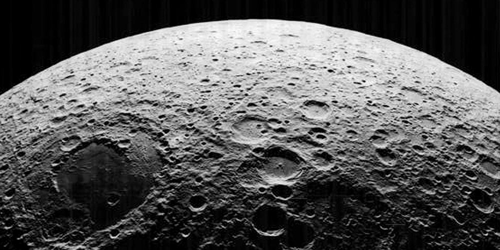
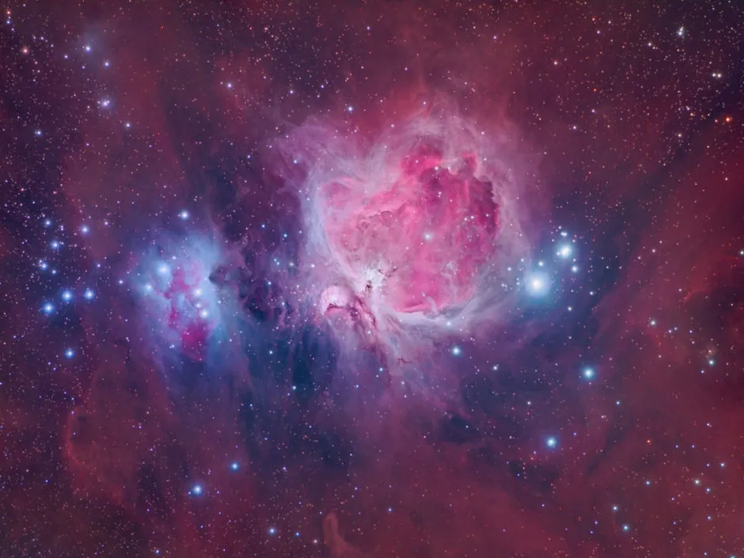
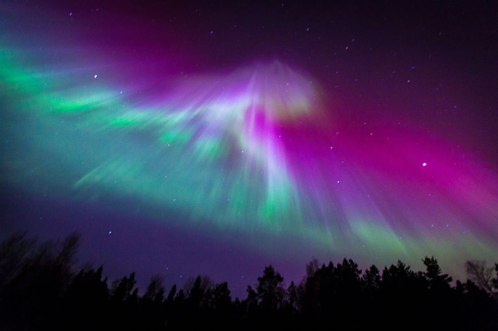
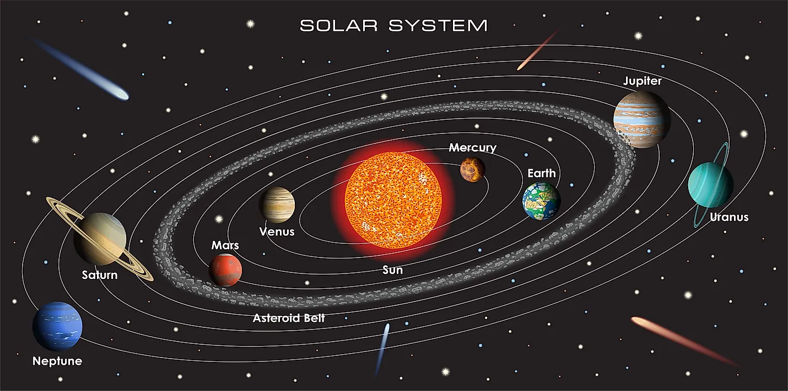
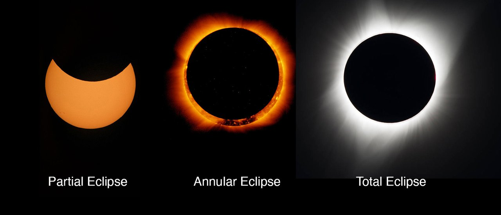

Explore the Universe From Your Backyard
Sky Gazing is your guide to understanding and appreciating the celestial wonders above. Whether you're a beginner or an experienced astronomer, we have resources to enhance your stargazing experience.
Explore NowAstronomy Gallery

The Milky Way
Our home galaxy as seen from Earth

Lunar Surface
Detailed view of the Moon's craters

Orion Nebula
A stellar nursery in our galaxy

Aurora Borealis
Northern lights display

Solar System
Our planetary neighborhood

Solar Eclipse
Rare celestial alignment
Astronomy Videos
Solar System Exploration
Journey through our cosmic neighborhood and learn about the planets, moons, and other celestial bodies.
Hubble's Greatest Hits
Explore the most breathtaking images and discoveries from the Hubble Space Telescope.
Mysteries of Black Holes
Dive into the fascinating science behind these mysterious cosmic phenomena.
Some More Features
Moon Phases
Track lunar cycles and learn how the moon's phases affect stargazing conditions and astronomical observations.
Constellation Guide
Identify constellations, stars, and deep-sky objects with our interactive star charts and guides.
Event Calendar
Never miss meteor showers, eclipses, planet alignments, and other celestial events with our calendar.
Night Sky Simulator
Adjust the settings to see how the night sky looks from your location at different times.
Upcoming Celestial Events
Perseid Meteor Shower
One of the most active meteor showers, producing up to 100 meteors per hour at its peak. Best viewed after midnight.
Partial Lunar Eclipse
A partial eclipse where the Earth's shadow covers a portion of the Moon. Visible from Europe, Africa, Asia, and Australia.
Jupiter at Opposition
Jupiter will be at its closest approach to Earth, making it brighter than any other time of the year.